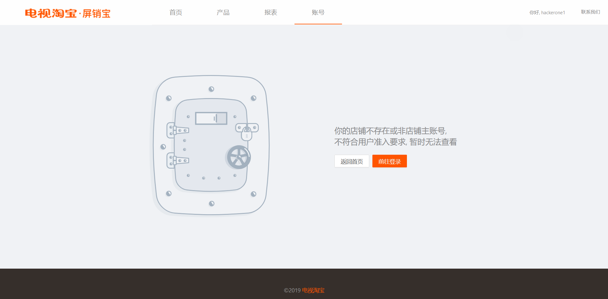
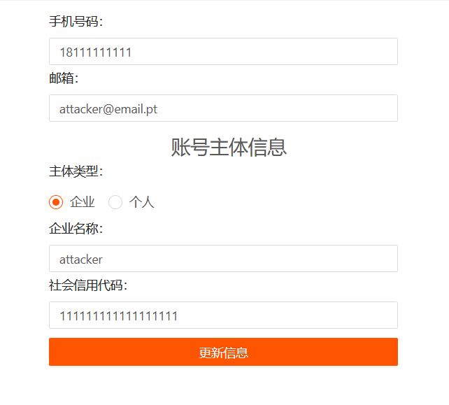
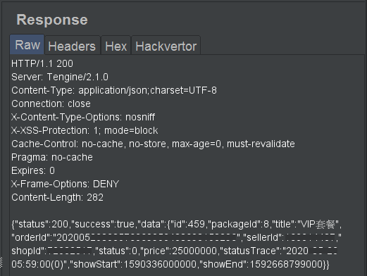
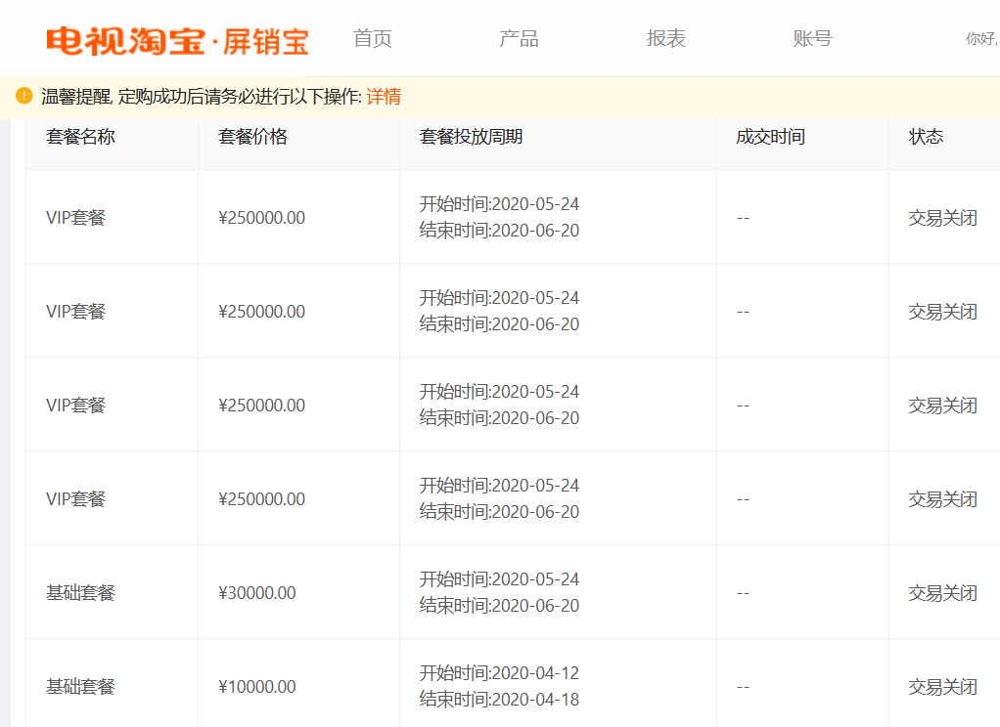

IDOR in domain of Alibaba Group - Taobao
24-06-2020
Introduction
Some programs were made public in HackerOne bug bounty platform last month, including Alibaba Group Bug Bounty Program. After having a look at their program details I've noticed they had pretty standard rewards but a huge scope to explore.
Alibaba Group is made up of private companies based in China whose businesses are focused on e-commerce, retail sales and online payment services. They also power up a search engine for purchases and cloud computing services.
The main services of this group are, just to name a few:
- Alibaba
- Alibaba Cloud aka Aliyun
- Aliexpress
- Alipay
- Taobao
- Tmall
Scope
Their scope include Taobao assets. I decided to begin here.
As usual, started by doing some subdomain enumeration using common tools such as: Amass, Sublist3r, Assetfinder and Findomain. Also used online tools to perform passive reconaissance like C99 Subdomain Finder.
The scan generated an output of more than 2 MBs of subomains related to Taobao itself, that's almost 100.000 lines of unique subdomains.
Exploration
By navigating a while through subdomains I've found this particular one
Turns out this is a cable TV service, or similar. The referenced pages are
At this point, more enumeration was performed to increase attack surface via sub directory scanning with Gobuster, which is pretty quick for this task together with wordlists.
This web server doesn't return a
To be able to distinguish found pages from not-found pages,
Gobuster can be configured
to display HTTP body response length (argument flag
By tweaking and running the tool, it found the directory
The page took a little to load since it runs over Java
Quickly noticed the top right
After logging in with the test account, the server displayed a page with the following
error message:

Unhappy with the results, decided to explore further. The only permissions the test account had was to read and modify its own personal details, such as full name, email, phone, etc.
Exploitation
To understand what was happening behind the scenes I've started Burp Suite to intercept and analyze HTTP requests. When editing personal details of test account, immediately observed that input verification was performed on client-side.
For example, modifying e-mail to
At this time, created a second test account
By sending the same previous request while authenticated as

This can be considered a valid IDOR as the web application relies on client-side values to perform operations. An attacker is able to bypass access controls by changing the ID to anyone else ID.
Even while validating this vulnerability with success, the permission problem still persist. In order to use other features the user must be authenticated with a shop account since test accounts hadn't enough fancy permissions.
As the website relies mostly on client's browser to execute Javascript, the tool Relative-url-extractor revealed interesting results against the included Javascript files.
The tool returned a lot of other API endpoints that weren't used in main page. For example, the endpoints
/api/user/view_info /api/user/update_info /api/user/check_level
The user ID's were not ideal to perform a brute-force because they were 13 digits long. It would be exhaustive to send a lot of requests to the server and did not want to take it down by DDoSing.
By doing a Google search with dorks, came across multiple shop user ID's. In fact, these ID's can be found within Taobao sellers page.
Requesting the
There was another interesting API endpoint which wasn't available to simple user accounts but
appeared to work with shop accounts:

By tweaking some parameters in Burp Intruder it was possible to observe the following order history. These orders were created on behalf of privileged users (shop owners).

Tampering the user ID with a shop ID value and sending a request to this endpoint will successfully create a new order on behalf of the shop owner! This way it is possible to leverage the IDOR and perform other privileged operations by escalating vertically.
Timeline
- 2020-05-05: Reported this vulnerability to HackerOne Alibaba bug bounty program
- 2020-05-06: Triager closed as
N/A saying that it wasn't a valid security issue - ...
- 2020-05-17: Added more context to report since then, but triager do not reply anymore
- 2020-05-18: Contacted Alibaba Security Team directly
- 2020-05-19: Alibaba Security Team changed status of my submission to ignored